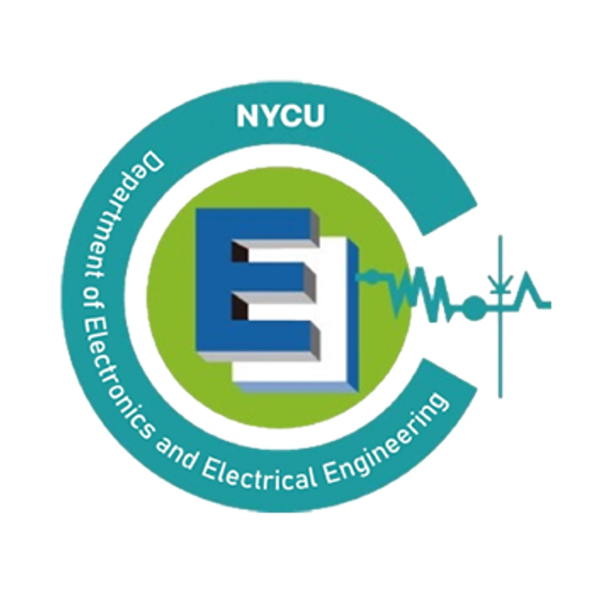

簡介
國立交通大學（NCTU）電機與資訊工程學系，現為國立陽明交通大學（NYCU）的一部分，以其深厚的學術傳統和前沿研究而聞名。該系成立於1965年，在培養台灣半導體及高科技產業頂尖人才方面一直扮演著關鍵角色。
電機與資訊工程學系提供多樣化的課程，涵蓋電子學、電路與系統等基礎領域，並深入探討數位訊號處理、通訊、積體電路設計及人工智慧等進階主題。學生透過實驗課程及研究機會，不僅能夠扎實掌握理論知識，還能透過實作培養對電機工程原理的全面理解。
該系強調跨領域學習，鼓勵學生與來自不同領域的師生進行合作。研究是電機與資訊工程學系的核心之一，教授們主導的研究專案涵蓋半導體技術、無線通訊和機器人等前沿領域。系上擁有現代化的實驗室與設施，不僅支援學術研究，也支援產業研究，讓學生站在技術創新的最前端。
系所位於有「台灣矽谷」之稱的新竹科學園區，與國內蓬勃發展的科技產業緊密相連。這樣的地理優勢使學生能夠與頂尖企業合作進行專案、參加實習及產業研討會，為他們在就業市場上提供了強大的競爭力。
交大電機與資訊工程學系的畢業生在學術界與產業界均備受肯定，許多人在全球科技公司擔任工程師、研究員及領導職位，並取得卓越成就。系上對卓越與創新的追求，使其成為立志在電機與資訊工程領域開創新局的學生的首選學府。